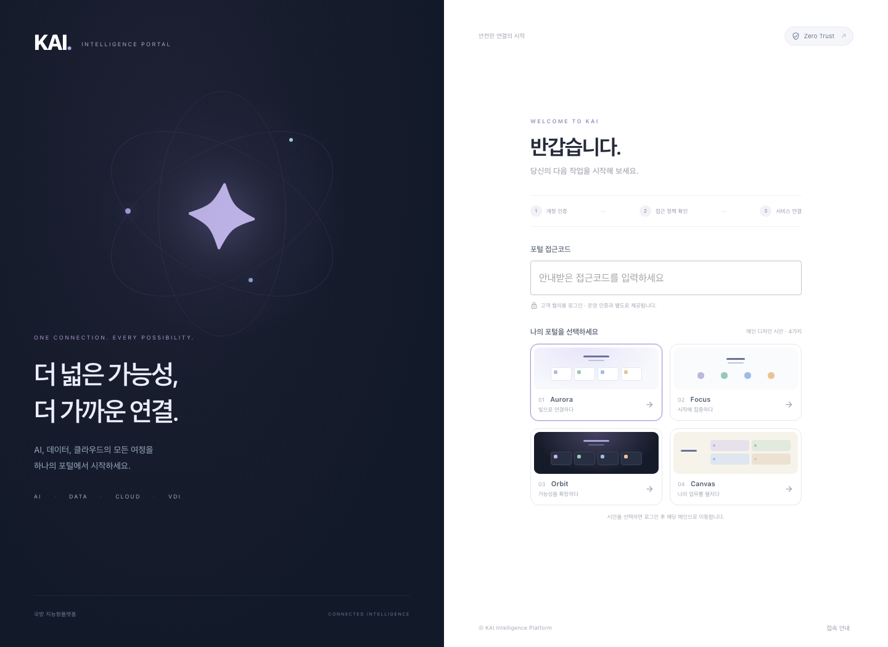
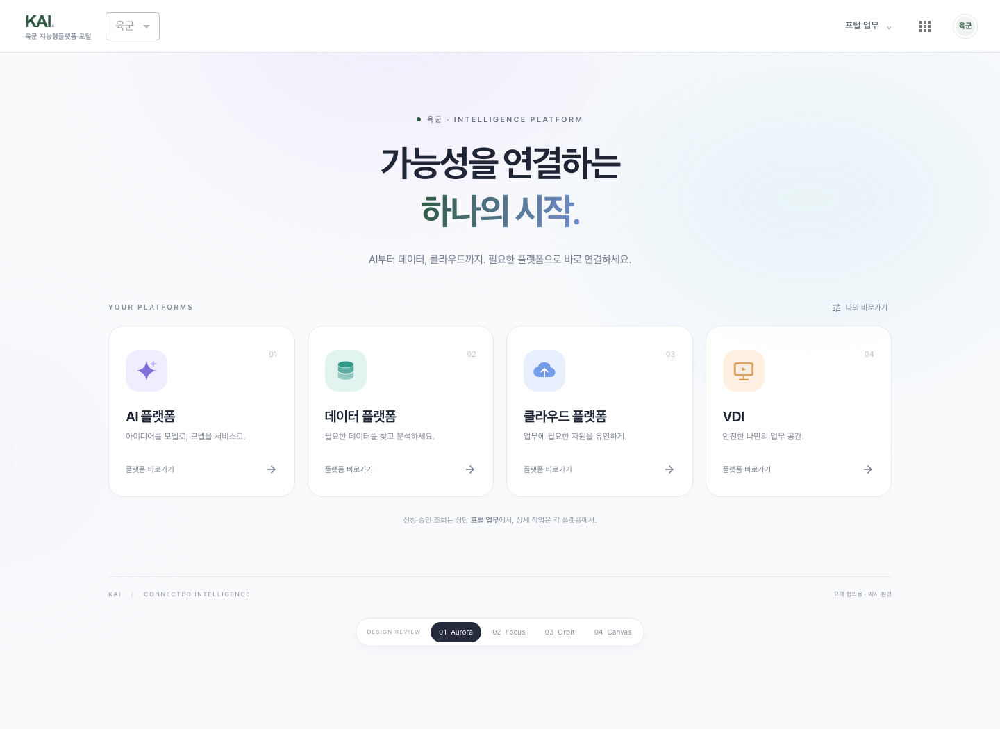
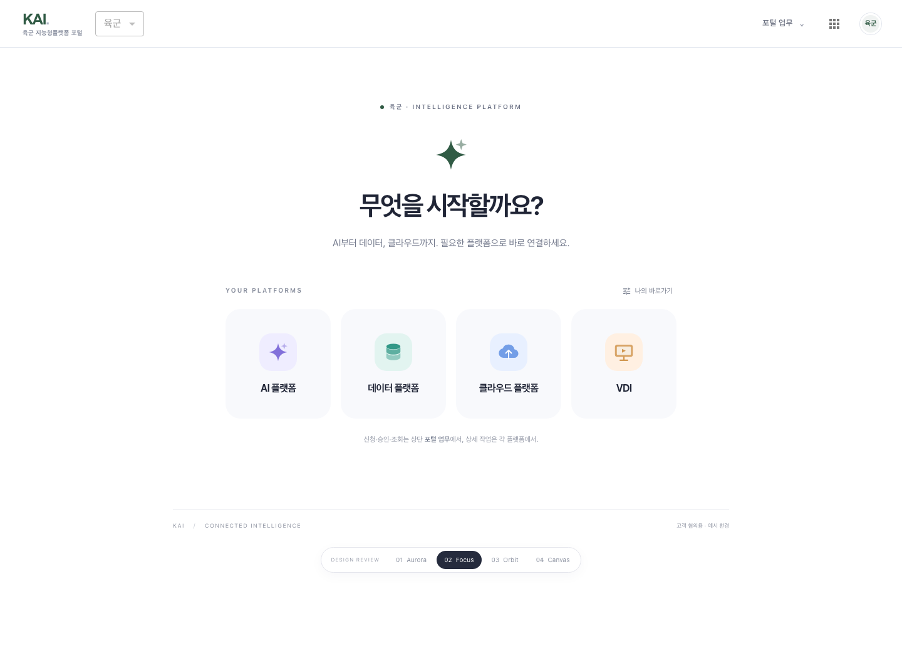
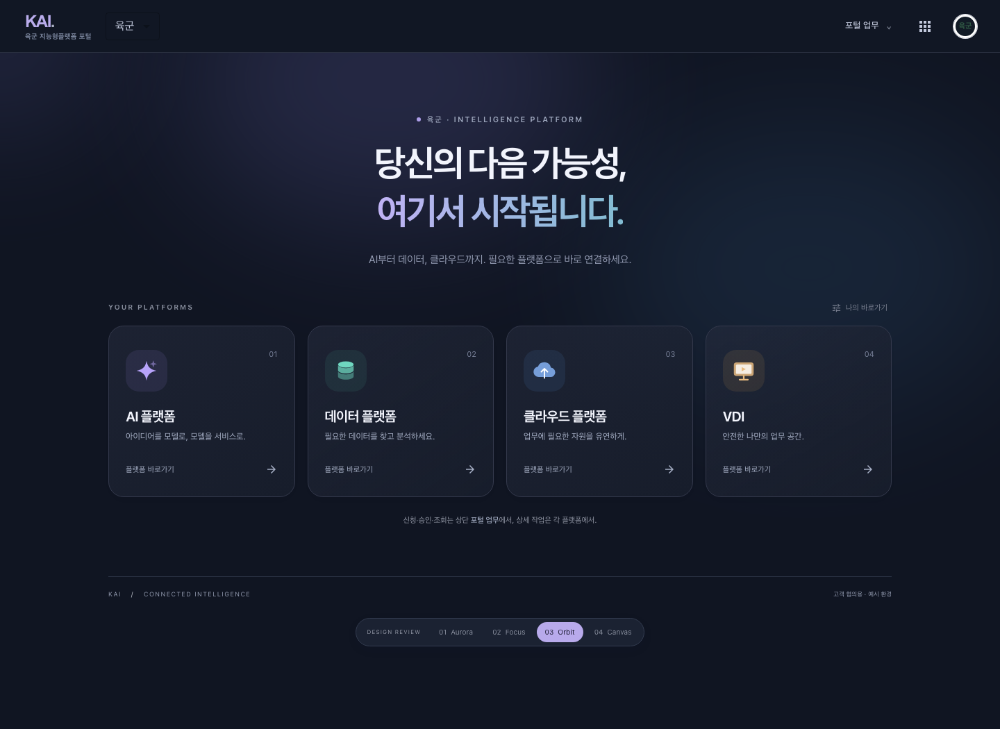
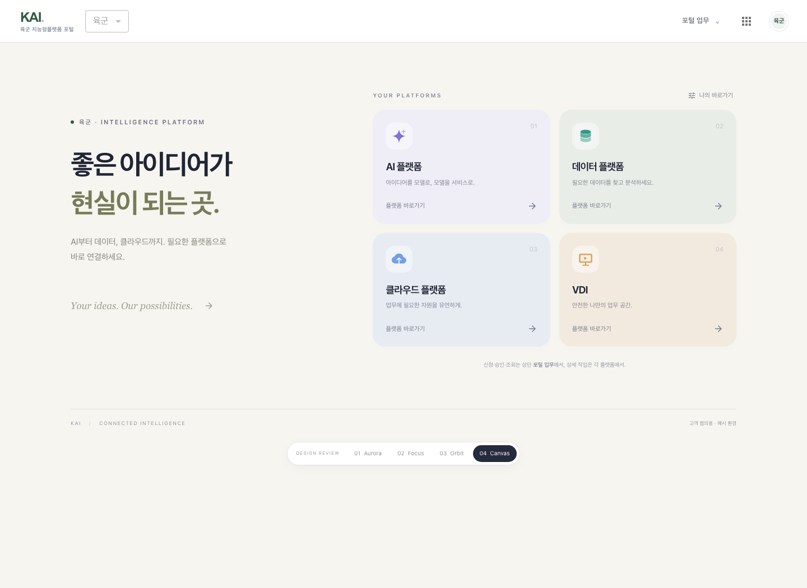
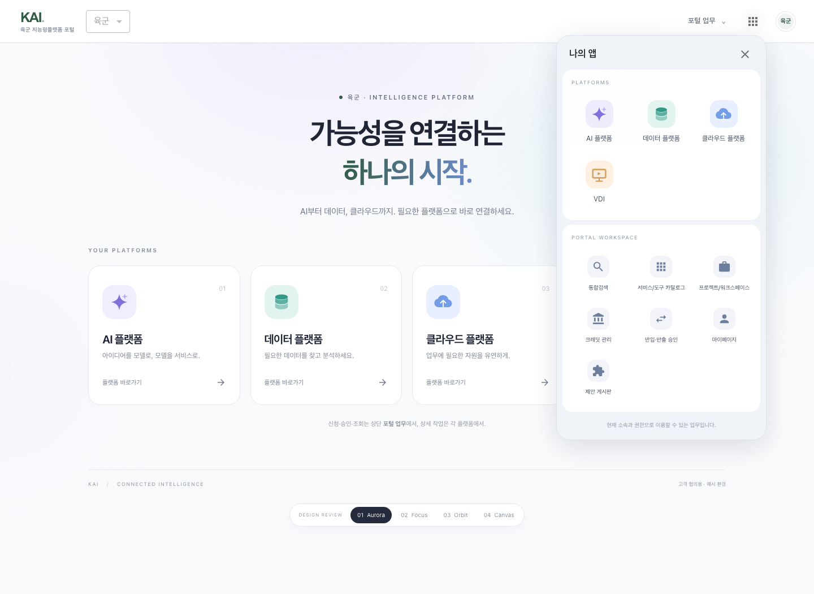

로그인 · 플랫폼 바로가기 · 포털 업무 진입을 위한 고객 협의용 시안각 이미지를 클릭하면 원본 크기로 볼 수 있습니다.

기관 인증 동선과 고객 협의용 시안 선택. 미검증 보안 상태를 완료로 표시하지 않습니다.

빛과 여백, 균형 잡힌 네 플랫폼 카드.

필요한 서비스만 남긴 가장 간결한 시작.

깊은 밤의 색감과 선명한 플랫폼 경험.

따뜻한 질감과 편안한 워크스페이스.

플랫폼과 기존 포털 기능을 상단 아이콘 메뉴에서. 사용자의 권한과 테넌트 설정을 반영합니다.
2026.09.24 · 고객 협의용 · 화면은 로컬 예시 환경에서 촬영했습니다. 실제 플랫폼 및 제로트러스트 인증 연계 완료를 의미하지 않습니다.